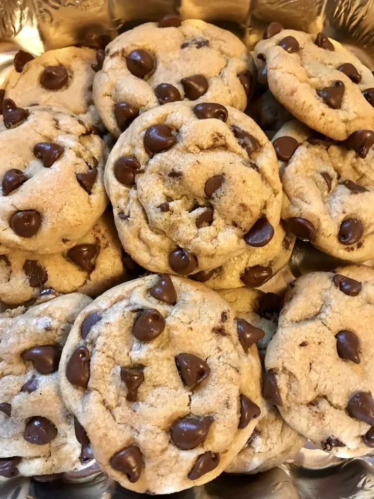

- 125 g de manteiga sem sal em temperatura ambiente
- 1/2 xícara de açúcar mascavo
- 1 e 3/4 de xícara de farinha de trigo
- 300 g de chocolate meio amargo picado
- para fazer cookie de chocolate acrescentar 1/4 xícara de chocolate em pó
- 3/4 xícara de açúcar
- 1 ovo
- 1 colher (chá) de fermento em pó
- 1 colher (chá) de essência de baunilha
Modo de preparo
- Misture a manteiga, açúcar mascavo,
açúcar, essência de baunilha (e chocolate em pó, se for fazer cookies
com base de chocolate).
- Adicione o ovo batido aos poucos e misture bem.
- Acrescente a farinha aos poucos e misture bem (pode ser na mão ou na batedeira planetária)
- Adicione o fermento e misture só para incorporá-lo à massa.
- Depois da massa bem misturada, adicione o chocolate picado.
- Forme bolinhas pequenas e asse em forno preaquecido,
sobre papel manteiga, por aproximadamente 15 a 20
minutos (250° C).
Informações adicionais
As bolinhas devem ser pequenas, pois os cookies se espalham no forno. O tempo de forno depende, e tem que cuidar
para não queimar embaixo.
O cookie fácil de fazer é uma ótima opção de lanche para as férias, sobretudo quando se tem crianças em casa!
Uma boa dica é congelar a massa de cookie e assar quando for servir, pois assim você sempre terá cookie fresquinho
e quentinho, uma delícia!
